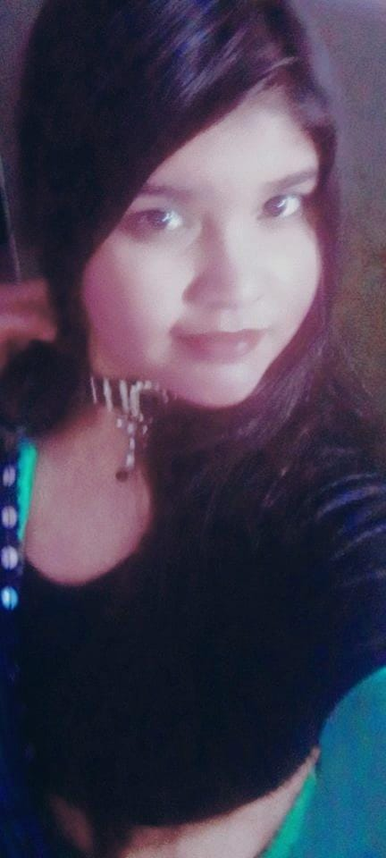

Esne sacch me saare layers acche se peel up kiye and Sach me I saw the real me jisko hm khud na samaj paye.
Mera haar behavior ek survival strategy tha..which I wasn't even aware of.
It's true babes... hm na kisis relationship ko haar chij de dete hai kyuki I fear being abandoned (tbh my trauma) kyuki babes hm cahe kuch bhi kr le hm bachpan se abandoned hi hote aaye hai infact at some point my own parents abandoned me uk right.
And fir babes tbh hmne tmse wahi chije expect ki (jiske khi na khi hopes tmne hmko diye)* the and when u started showing me changes in you hmko lgne lga ki ye to change ho rhi khi hmko ye bhi abandoned na kr de so I just hugged you harder ki hmko to sab sahi lage but unknowingly ended hurting you through my strong hold and es cahacker me I started controlling you (which was fear in disguise). Became blind and just wanted you to be with me don't abandoned me cause it's 21yr and still am finding a home for me a peaceful place which I got in you, my home, my comfort zone, hm daarne lge to loose you.
(jiske hopes tmne diye)* : #you told me ki i will wait for u priyanshu aab hmare bitch koi nahi aa skta hai as a friend bankr bhi nahi..
# kuch din phle u told me ki if u dont change still koi issue nahi but aab hmlog breakup ke kagar pr khade hai.
etc...these are the most recent which i remember aur yaad aayega to i will note it..!
Yeah I feared everything, es chacker me I forgot who am I and I myself abandoned myself hm khud ko na samaj paye and cahte rahe koi aur samjhe.
Yes for me sometimes being alone is good but being alone mostly is very disastrous to me were I start observing my every wound I feel betrayed by my life, by peeps, by body and even with my God. Hmesha to yhi Bola jata hai na ki Maa aapna beta ko rote nahi dekh sakti, but meri uss maa ko mere aasu kyu nahi dikh rhe. It hurts me a lottt tbh.
I am in fight, I am fighting since long, babes aab thak chuke hai...es liye I asked time from you of 1 month just rest krne ke liye, chije samajne ke liye but ye month obviously waisa nahi tha jaisa hm cahte the.
But babes en sab me Mera kya galti hai babes... hmko to khud ko nahi pta tha hm ye sab aapne sath le kr chal rhe andar hi andar nd ye chij etna bhayanak tarah se Mera life ko impact kr rha. Hm starting se jo bhi kiye sab anjane me kiye, unintentionally , unknowingly. And it's already said here "These things aren't my flaws they are formed as protection" (agar ye chije hmko pta hota nd still hm kn krte tab jaa kr it can be called my flaws).
Yess ensab ke karan I have started feeling I am hard to love, I am always not enough, nd if peeps really know he they will leave me. Nd this believe has only shaped how I love, how I survive
*sits down near you*
My love it is so easily explained na nd hmlog ko to jara sa bhi idea hi nahi hua.
Babes uk before I met you hmko ye sab trauma nd all ke bare me pata hi nhi tha acche se... so I used to live my life but deep down wo tha mere andar hm khud nahi jate the.
Fir tm aayi meri life me tmne bataya, Mera story suni nd fir I realized ki omg ye to bilkul sahi baat hai.
Fir hm haar chij observe krne lge chota se chota bada se bada, baato ka bura Maane lge.Fir hm dekhe ki mere sath kita bada injustice ho rha .
Fir mere life me aayi thi tm...ek choti si depressed bacchi jiska kahani sunkr hmko lga eska help kre nd hmara bond bhi etna accha ban gya ki aab to jiyenge bhi eske liye nd marenge bhi eske liye type ho gya tha.
Nd babes...
Tmne na hmko jo jo Bola hm sab sune nd I got impressed by u ki saala jo hmko bachpan se nhi mila ye hmko wo degi... nd I came to relationship.Babes hmne na tmse sirf wahi expect kiya jo hope tm hmko di thi (u have already seen the chat usme u wrote ki I will wait 4u priyanshu aab hmare bitch koi nhi aa skta even frnd bnkr bhi)
So I started expecting it.. but u had your frnds jo ki hmko treat lgne lge nd baar baar ladko ke liye jhagra se hm aur daar gaye ki yrrr ye to change ho rhi, nd fir here it played the role (the fear of getting abandoned)
Like babes imagine u went to a zoo nd u saw a cub there nd peeps were all allowed to go to that cub and care him. So phle ke kuch log gaye nd usko care krke, pyar de kr aaye, fir some people went nd unhone haath badhaya to care but instead they shaped the cub in fun, aysa 3-4 baar hua nd aab the fun loving cub is a bit afraid nd aab tum gayi to care him and you wanted to care him and tmne haath badhaya uski taraf and when u were close he just scratch you on your hand. See here why did the cub react in such way.?? Tmhara to intention sahi tha na but problem ye tha ki wo Dara hua tha so for his defense usne scratch kr diya tmko, kyuki usko laga ki tm bhi pyar krne ke bahane usko hurt krogi esliye he did.
Same is here with me babes. I saw u changing, not being on your words so hm na daar gaye and held you tightly etna ki tmko hi hurt hone lga. but mera aysa kuch intention tha nahi...
It wasn't control babes it was fear in disguise. Fear ki haar baar jaise es baar bhi ho jayega. Nd I don't want to loose you frrrr. Bahut si chije hai tmhare sath meri, Hmne jo kiya anjane me kiya. Anjane me bahut kuch kr diye hm ye specially 1 month me..
Wrna tmko kya lgta hai ? Hm thara life heven banane aate hai babes ki tm merepr garv kro nd how can I become someone jo tmko etna hurt kre nd trauma de. I can never do. Frrr I can never become like your father even if it's the last option I won't choose it.
Babes ik u, ik wht do u want, ik tm kis chij se gusar rhi, nd kya chij se guzar chuki ho, ye sab jaane ke baad bhi tmko lgta hai I could do this.??? Say.!
Nd aab I ask your pardon as I have realized my mistake nd I will be very determined to work on it kyuki its not just abt us its about me too bahut ho gaya aysa dead jaisa life. Babes aage badhte hai na..!!! 🥺🤧
Ik u will say ki nah chij bahut toxic ho gyi hai hmse nahi hoga nd all... babes chije to phle bhi toxic thi and infact mostly 80% of the relationship me hota hai ye. It was because we didn't knew each other well, it was cause Mera dimag freeze tha kuch time se, it was because hmlog real reason dundh hi nahi paa rhe the.
Nd ha u will say ki phle to hue nahi change aab kya hi honge.... i dont trust u...yah babes ik but u don't see the small changes in me kyuki I am a person jo khud ke flaws ko jaane me nd unpr kaam krne pr jyada determined rhta hai (if I find them valid) nd ye jo chij abhi hmko pta chla ye bahut hi jyada valid hai for even my personal growth I can't ignore it. And I will be fully determined.
Babes hm na ye 2-3 month se ayse esliye Kar rhe the cause hm thak chuke the ladte ladte hmko thoda rest cahiye tha, sambhalne ke liye chije samajne ke liye. But I didn't get tbh..
Nd see ensab ke karan hmko kya kya chije dekhni padi. Like babes tmne ek mauka nahi chora to express your anger, to express your frustration tmne bahut bura bhala Bola etna hurt kiya through words ki hm roo diye ye sab sun kr , may be I will add a video too just see it tmko pta chlega. But babes tm to ek baar try krti na samajne ka. Ki kyu kr rha ye nd all..anyways i cant blame you too hm to khud wahi the
but You started doing provoking things, neglected my boundaries again nd again, Babes you read na.. ki this boundary of mine is very valid(double meaning wali) cause it's a very sacred thing for me joki tm dusro ke sath normal kr rhi to wo chij hmko hurt krta hai, Mera emotional connection with you ko disturb krta hai, I don't want to be like this nahi want to keep u like this. Babes usme bilkul sahi likha hai kyuki yha misunderstanding hua hai...i stopping you to talk double meaning cause i take is as matter of respect (tbh i want to feel proud ki koi hmko es dunia me ye na bol paye ki hm thmari biwi se aysa waisa baat kiye hai and she had entertained it) and sach me ye sexual stuff nd double meaning things are sacred for me and tm usko casual bana rahi with others and yeah i fear ki someone else will be invited or attracted to that space jo syd mere liye hi reserved thi..!
Babes yha bhi you took me wrong kyuki ye sab hua cause of daar not cause of trust. Cause aab i have changed and i trust you frrr.
Conclusion from my side..!!!
Babes aab bahut ho gaya ayse ghut ghut kr daad daad kr jina. Aab I can't aab it's time to rise again for me. Tm par dhyan dena, tumpr dhyan dena and career par dhyan dena will be my priority. Babe uk hm na aapna dream life nahi ji paa rhe ensab ke karan uk i am a guy with leadership skills I have been praised for it in my school so much but ye physical ke karan i am not being able to live it kyuki it directly says responsibilities lena and abhi i cant take aapne body ke karan (physical labor jyada ho jayega) wrna i swear on god babes if ye sab nahi hota na to i would have been captain or vice captain of the students council etna belive hai hmko...Uk babes mere bahut bade bade sapne hai. I want to establish 2 businesses (on your name hehe). Pura world ghumna hai tmhare sath, different different chije try krni hai tmhare sath nd manyyyy more.
I remember tht day u told me ki tm hmko seriously nhi lete u take me as a dumb nd pta nhi kya kya.. babes sacch bole to kbhi mere nazar se khud ko dekho tmko khudko viswas nahi hoga ki koi pgl ke liye tm etna mean kr skti ho.
Changes that i will bring in myself: Stop being depressive, negative and demotivated, stop neglecting body, less overthinking, living for you and me, let you have male friends, enjoying life with you sharing interests, respecting your trauma, excepting you as u are, socially active(u see na hm rest mode pr the esliye i was acting like tht in insta) etc...
what do i want from you: your pyar, your priority, aapna raat ka proper dedicated time, and a clear boundary not to control but to maintain dignity of the relationship..!
babesss chal na sab bhul kar aage badh kr ek emotionally safe and loving space banante hai for each other.. ye en problems ke alawa ye relationship despite being in long distance bahut hi jyada greattttt hai pyara hai mast hai.
##DEDICATION##

Am dedicating my all this work to this pic wali yami who was that innocent ki wo puri dunia se haar kar raat me aati thi mere pass to find her home, her comfort and hm usko bahut hi aapne paan se galle nbhi lagate the have done all this for her i didnt gave up after suffering so much aslo just for her taki if kal ko this pic wali yami returns nd asks me ki babes tmne promise kiya tha na you wont leave me ever cahe kita hi ganda situation kyu na aa jaye..so i did all this for her ki if she ever returns too i can face her and will tears in my eyes say her ki "babes i tried i tried very hard until my last hope proudly" just for you my love.
no one is perfect, flaws sab ke pass hote hai its on peeps ki wo aapni galti kitni jaldi discover krte hai and sudharte hai and am here discovered late but discovered before whole distruction...I still ask you pardon yami my love i promise you hmne jo jo bola hai i will do it frr just tm bhi en baato ko samjho nd saath do. Ik you would say ki hmne phle bhi ye sab kiya but still boys ko lekr jhagra hota raha.. today i stand here and respects your all that effort i really was imature and a big fool but trust me realization se bada ar kn hota and i had me us priyanshu me nd aaj ke priyanshu me bahut bada difference hai..trust me.
and with all this i keep this relationship in your hands...not even hands but feet (to show my submission to you) babes u tell me na hm bahut dominate krte hai but deep down i respect you a lot can kiss your feet to show my submission...love i worship female energy how can i do it...tm bhi same ho mere liye.
nd ik tm jo desicion logi wo bilkul sahi logi and waise bhi for wht will u punish me or hate me..? just tmko haad se jyada pyar krne ke liye? tmko khone se darne ke liye?...
~~~ many surprises nd long way to go lovee for the dream we dreamed, for the promises we made..!!